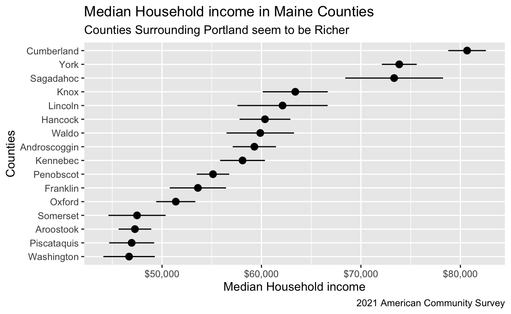

Information
Introduction
Let’s learn how to work with and map data from the US Census. We (mostly) follow the approach of Analyzing US Census Data: Methods, Maps, and Models in R by Kyle Walker. If you would like to work more with census data, follow Walker’s advice closely.
Getting data
The Census API works by accessing Census databases and tables. We can find these tables by visiting data.census.gov. We will learn how to access data from the American Community Survey, the Decennial Census, and the Population Estimates Program in this section.
Exercise 1
Let’s try accessing the Decennial Census database. In order to do
this, we’ll use the get_decennial() function with the
geography, and variables arguments.
Let’s try to find the total American population by state. First of
all, we need to access the variable containing these populations, which
is P001001.
Run get_decennial() below setting geography
to "state", and variables to
"P001001".
get_decennial(... = "...",
variables = "...")This should return a tibble with 52 rows and 4 columns, and should start like the image below.

The geography argument determines the scope of the data
(such as us for the entire country and county
for counties), and the variables argument defines which
variables you want to use.
Exercise 2
get_decennial() has a default value for the
year argument, which is 2010. Copy and paste
your code from above and add the year argument, and set it
to 2020. Change the variables argument to
"P1_001N", because the "P001001" was renamed
starting in 2020.
get_decennial(... = "...",
variables = "...",
year = ...)By changing the year argument, we can specify when we
want our data to be from.
Exercise 3
Along with the arguments we have already learned, there is also the
sumfile argument, or “summary file”.
Run the get_decennial() function below setting
geography to "state", variables
to "P1_005N", year to 2020, and
sumfile to "pl".
get_decennial(geography = "...",
variables = "...",
year = ...,
sumfile = "..."
)This retrieves information on the American Indian & Alaska Native
population by state from the 2020 decennial Census. The pl
summary file is one type that is a limited subset of variables from the
decennial US Census to be used for legislative redistricting.
To learn more about the sumfile, we again recommend
Walker’s book.
Exercise 4
Just as get_decennial() gets information from the
Decennial Census, get_acs() gets information from the
American Community
Survey.
Run the get_acs() function setting
geography to "state", variables
to "B05006_150" and year to
2021.
get_acs(geography = "...",
variables = "...",
year = ...
)The example above fetches data on the number of residents born in
Mexico by state. Notice that the tibble produced has an
estimate and a moe column rather than a
value column like the Decennial Census data.
This is important.
Exercise 5
Along with the arguments, we’ve already learned, there is also a
survey argument. This argument defaults to 5 year periods
if not specified. We can change it to a one-year period rather than a
default 5-year period by adding survey = "acs1".
Run get_acs below setting geography to
"state", variables to
"B05006_150", survey = "acs1",
and year to 2021.
get_acs(... = "...",
variables = "...",
survey = "...",
... = 2019)The above function yields data on the number of residents born in Mexico by state in the year of just 2021 instead of a 5-year period as earlier.
Notice that the GEOID column contains the FIPS code of the area the data covers. This code is a standardized way to identify different geographical areas. It gets larger as the area under consideration narrows. The FIPS for Massachusetts is 25. For Middlesex County within Massachusetts, the FIPS is 25017.
Exercise 6
Rather than using the variables argument, you can supply
a table name to the table parameter in
get_acs(); this will return data for every variable in that
table.
Run get_acs() below setting geography to
"state", table to "B01001", and
year to 2021
get_acs(... = "...",
table = "...",
... = ...)This code got all variables associated with table
B01001, which covers sex broken down by age, from the
2017-2021 5-year ACS.
Exercise 7
What if we want to analyze a variable at the county level, but only
in one state? We can use the state argument along with the
geography argument.
Run get_acs() below setting geography =
"county", variables to
"B19013_001", state to "GA", and
year to 2021
get_acs(... = "...",
variables = "...",
... = "WI",
year = ...)The example above returns average household income by county, but
only in the state of Georgia. When using the state
argument, you can use the state name ("Georgia"), the state
postal code ("GA"), or the FIPS code
("13").
Exercise 8
Smaller geographies, such as Census tracts, can be subsetted as well
by the county argument.
Run get_acs() below setting geography =
"tract", variables to
"B19013_001", state to "13",
county to "Gwinnett", and year to
2021
get_acs(geography = "...",
variables = "...",
state = "...",
... = "Dane",
... = ...)The above code retrieves the average household income for every tract in Gwinnett County in Georgia. Subsetting is extremely useful, as it allows you to download only the data which is relevant to you.
Exercise 9
Let’s switch gears. What if we don’t know what a variable ID means; after all, they’re just a bunch of letters and numbers.
Luckily, the tidycensus packages offers the
load_variables() function.
Run load_variables() setting year to
2021, and dataset to "acs5"
load_variables(year = ..., dataset = "...")Notice the “label” and “concept” columns, providing information about
each variable. To learn more about load_variables() and its
arguments, go to Kyle
Walkers introduction to tidycensus
Exercise 10
Now we may know what a variable name means, but it’s probably pretty annoying to type that every, single time you need it. So how can we rename it?
Run get_acs() below setting geography to
"county", state = "Utah",
variables to a vector containing medinc which
is assigned to "B19013_001" and medage which
is assigned to "B01002_001", and year to
2021.
get_acs(geography = "...",
state = "...",
... = c(medinc = "...",
medage = "..."),
year = ...)In the variable column, the values are “medinc” and “medage”, not the complex ones we imported.
Exercise 11
Now, let’s learn about get_estimates(). This gets data
from the Population Estimates Program (PEP).
Run get_estimates below setting geography
to "county", product to
"components", state to "GA",
county to "Chatham", and year to
2019
get_estimates(geography = "...",
product = "...",
... = "...",
county = "...",
... = ...)The code above requested all components of change population estimates for 2019 for Chatham County in Georgia.
The confusing part of this function is probably the
product argument, which essentially allows the user to
access the indicators used to produce the intercensal population
estimates.
Learn more about get_estimates() and its arguments here
Exercise 12
get_flows() allows for analysis of immigrants,
emigrants, and net migration for a given geography using data from a
given 5-year ACS sample.
Run get_flows() below setting geography to
"county", state to "HI",
county to "Honolulu", and year to
2019
get_flows(geography = "...",
... = "...",
county = "...",
... = ...)This should return a tibble with 6 columns, one of them being
“variable”. We can see variables such as “MOVEDIN” and the corresponding
estimate of 152 as the number of people who moved from Africa (look at
the FULL2_NAME variable) to Honolulu in 2019
Congrats! You now have the necessary skills to pull all kinds of data from the US Census Bureau.
Margin of error
In this section, we are going to learn what a margin of error (moe) is, and how we can analyze and visualize it.
Exercise 1
Run get_acs() below setting geography to
"county", state to
"Rhode Island", variables to
"B19013_001" (median household income), and
year to 2020.
get_acs(geography = "...",
state = "...",
variables = "B19013_001",
year = ...)There are only five counties in Rhode Island. In an ideal world, we would have the household income for every family in each county. If we did, we could precisely calculate what the median (and the mean and the max and . . .) household income is in each county. But we don’t have data on every household because the ACS is a survey, unlike the Census. We only have a sample of some households in each county.
We are not going to teach you statistics in this tutorial! Behind the scenes, the ACS is making all sorts of calculations. In the end, using statistics, they provide us with two numbers: an estimate of the median household income in each county and a moe (margin of error) for that estimate.
In other words, the ACS calculated that a good estimate of the median household income in Bristol County is $85,413. Is that the true number? The ACS does not know! It does not have data for all the households in Bristol County. The ACS only has data for a sample of households.
Exercise 2
The estimate plus or minus the margin of error is known as a confidence interval. Let’s explore that.
Copy/paste your code from above. Add the moe_level
argument and set it to 95.
get_acs(geography = "...",
state = "...",
variables = "...",
year = ...,
moe_level = 95)The estimate remains constant, but the margin of error changes… why?
Every confidence interval comes with a confidence level. This level defaults to 90%, but we changed it to 95% just now.
Exercise 3
Copy/paste your code from above and change the moe_level
from 95 to 99.
get_acs(geography = "...",
state = "...",
variables = "...",
year = ...,
moe_level = 99)The moe column changed again.
When the confidence level is 99%, it means (roughly!) that 99 out of 100 times, the true (and unknown) value of median household income will fall between the confidence interval’s upper bound and lower bound.
In the examples earlier, as confidence level increased, so did margin of error because if your interval is larger, there is a higher chance that the true value falls within it.
Exercise 4
Copy/paste the code from Exercise 3 and run it without any changes.
Let’s look at the first column. The estimate is 85,413, and the margin of error is 9,527. So the bottom bound of this interval is 85,413 - 9,527 = 75,886 and the upper bound is 85,413 + 9,527 = 94,940.
The final interval is (75,885.75, 94,940.25) which is saying that the mean household income for Bristol County is between $75,885.75 and $94,940.25.
You can learn more about a margin of error and some related functions here.
Exercise 5
So now that we have an idea of what a confidence interval and a margin of error are, let’s visualize them.
We are going to create this graph:
## Getting data from the 2017-2021 5-year ACS## Fetching data by table type ("B/C", "S", "DP") and combining the result.
Run get_acs() below setting state to
"Maine", geography to "county",
variables to c(hhincome = "B19013_001")
(remember we can rename variable names by doing it in a vector), and
year to 2021.
get_acs(state = "...",
geography = "...",
variables = c(hhincome = "..."),
year = ...)This gives you your data, but the NAME column is
somewhat annoying because it includes “County” and “Maine”. We already
know that they are counties in Maine so let’s clean it up.
Exercise 6
Copy/paste your code from last exercise. Pipe it into
mutate(). Inside mutate(), set the
NAME column to
str_remove(NAME, " County, Maine").
get_acs(state = "...",
geography = "...",
variables = c(hhincome = "..."),
year = ...) |>
mutate(NAME = str_remove(NAME, " County, Maine"))The str_remove() function looked at the
NAME column (1st argument) and removed the text that was
specified in the second argument.
Exercise 7
Copy/paste your code from above and pipe it into
ggplot(). Set x to estimate and
y to reorder(NAME, estimate).
... |>
ggplot(aes(x = ...,
y = reorder(NAME, estimate)))By reordering the names on the y-axis based on their
estimate value, we avoid the sloppiness of the default
ordering, which would have been alphabetical.
Exercise 8
We will be using geom_pointrange, which is very similar
to geom_point() but with a line going through it to show
the range and margin of error.
For geom_pointrange to show the margin of error, we will
need to do some (very basic) math. We need to make the high end and the
low end of the margin of error, by adding and subtracting
moe from estimate, like this:
geom_pointrange(aes(xmax = estimate + moe, xmin = estimate - moe)).
... +
geom_pointrange(aes(xmax = ..., xmin = ...))Now, we need to fix our x-axis.
Exercise 9
We need to add dollar signs to signify that this represents money.
Add the scale_x_continuous() layer setting
labels to scales::label_dollar().
... +
scale_x_continuous(labels = scales::label_dollar())You can do a lot of things using the scales package, such as adding percent signs and dollar signs. You can learn more about scales here.
Exercise 10
Add the appropriate labels. Remember, our graph should look like this:

... +
labs(...)We just visualized margins of error at one moment in time, now, we are going to make a plot that spans multiple years. You can learn more about visualizing margins of error here
Exercise 11
We are going to create this plot:

Create a vector named years that goes from
2005 through 2019
years <- 2005:2019These are the years we will iterate over.
Exercise 12
Run library(purrr) below
library(...)We will be using map_dfr() from the purrr
package for this graph.
For exercises 15-24, add the following line at the top of every code box:
names(years) <- years
Otherwise your graph will be a little (or a lot) wacky.
Exercise 13
Run map_dfr below, setting the first argument to
years. You WILL get an error.
names(years) <- years
map_dfr(years)The first argument just tells map_dfr() which object to
iterate over.
Exercise 14
Copy/paste your code from above. Your second argument should be
enclosed within ~{} (Curly brackets with a tilde in
front.)
Inside the curly brackets, run get_acs() setting
geography to "county", variables
to "B25077_001", state to "GA",
county to "Dekalb", year to
.x, and survey to "acs1".
...
map_dfr(years, ~{
get_acs(
geography = "...",
variables = "...",
state = "...",
county = "...",
year = .x,
survey = "...")})By setting year to .x, the function
iterates through our vector and grabs data from each year instead of
just one.
Our data should be there, but it’s confusing to know which year is which.
Exercise 15
Copy/paste your code from above. Add a third argument in
map_dfr(). The argument is .id, and you should
set it to "Year".
...
map_dfr(years, ~{
get_acs(geography = "...",
variables = "...",
state = "...",
county = "...",
year = .x,
survey = "...")},
.id = "Year")If you look at the data now, there should be a new Year
column. This is what the .id argument does: it creates a
new column in the output data frame that contains values equivalent to
the names of the input object, which in this case is
years.
Now that we have our data, let’s plot it.
Exercise 16
Copy/paste your code from above. Pipe it into ggplot()
setting x to Year, y to
estimate, and group to 1.
... +
ggplot(aes(x = Year, y = estimate, group = 1))The argument group = 1 is used to help ggplot()
understand how to connect the yearly data points with lines given that
only one county is being visualized.
Exercise 17
Add the geom_line() and geom_point()
layers.
... +
geom_line() +
geom_point()geom_line() draws the lines, and we layer points on top
of the lines as well to highlight the actual ACS estimates.
Exercise 18
We will add the margin of error component with
geom_ribbon().
Add the geom_ribbon layer. Inside aes() set
ymin to estimate - moe and ymax
to estimate + moe.
... +
geom_ribbon(aes(ymin = estimate - moe,
ymax = estimate + moe))Now we need to add some styling arguments within
geom_ribbon() outside of aes()
Exercise 19
Outside of aes() but inside geom_ribbon(),
set fill to "navy" and alpha to
0.3.
... +
geom_ribbon(aes(...), fill = "...", alpha = ...)Now we need to re-label the y axis.
Exercise 20
It’s more appealing to see $400k for money rather than 400000. Let’s do that.
Add the scale_y_continuous() layer setting
labels to scales::label_dollar(). Inside
label_dollar(), set scale to .001
and suffix to "k".
... +
scale_y_continuous(labels = scales::label_dollar(scale = .001, suffix = "k"))We label the y-axis with dollar signs, divide them by 1000, and then add the “k” suffix.
Exercise 21
Add the appropriate labels.
Remember our plot should look like this:

... +
labs(...)Now, we know what a margin of error is and how to plot it. We can also plot margins of error over many years and in one instance in time.
Census geographic data
Census and ACS data are associated with geographies, which are the units at which the data is aggregated. We are going to learn how to work with these.
Exercise 1
Load the tigris package
library(...)Working with spatial data sets is quite complex. Fortunately, the
tigris package does a lot of the work for us. Let’s explore
the basic functions of this package.
Exercise 2
One problem with tigris is that sometimes it will take a
long time to download data. We can avoid this by editing our
.Rprofile file.
Run usethis::edit_r_profile() in the Console. Then put
options(tigris_use_cache = TRUE) in your
.Rprofile file. Save and close the file.
Type readLines("~/.Rprofile") in the Console. CP/CR.
The ~ symbol indicates your home directory. The command
should have returned the content of your .Rprofile file,
which should be the one line you just added. But, depending on your
computer set up, this might not work. No worries if so!
Exercise 3
Go ahead and restart your R session. This will close the tutorial. Just open it again after R restarts. (Note that restarting your R session is not the same thing as restarting RStudio.)
Then in your console, run options("tigris_use_cache").
CP/CR.
This should return a value of TRUE. Now this setting
will be in your .Rprofile until you change it.
Exercise 4
Using the assignment operator, create a variable named
st and assign it to states(year = 2019). On
the line right below that, run class() with st
as the argument.
... <- states()
class(...)This should return two datatypes: sf and
data.frame
The object st includes a data frame with multiple
columns representing characteristics of states such as name, postal
code, and Census ID (the GEOID column). It also contains a special
list-column, “geometry”, which is made up of a sequence
of coordinate of longitude/latitude coordinate pairs that show the
boundary of the state.
Exercise 5
We can visualize this geometry column with the
plot() function. Run plot() below with the
geometry column as the argument. Remember we extract
columns using the $ operator.
plot(st$...)This should show a zoomed out map of the US.
Exercise 6
We can also just grab counties from a specific state.
Create a variable below named nm_counties and assign it
to the function counties() with the argument
"NM". Then below that, run plot() with the
geometry column extracted from the variable.
nm_counties <- ...("NM")
plot(...$geometry)It should produce a graph like this:

We can visualize all the counties in New Mexico with the
counties() function.
We can do the same thing with the tract() function,
using the state and county arguments.
Exercise 7
Now, Let’s acquire landmark point data for DC.
Create a variable named dc_landmarks and assign it to
the landmarks() function. Set the first argument to
"DC", and set the second argument, type, to
"point". Then below that, use plot() to plot
the extracted geometry column from the variable.
dc_landmarks <- landmarks("...", type = "...")
plot(dc_landmarks$...)This should produce a bunch of what seems like random points, which represent all the landmarks in DC.
Exercise 8
We’ve created dots with landmarks, but what if we want to study something like roads? Lines would be more useful.
Create a variable named dc_roads and assign it to the
primary_secondary_roads() function with a single argument
of "DC". Below that, plot the extracted
geometry column from the variable just like before.
dc_roads <- ...("DC")
plot(...)You should see a bunch of lines which represent DC’s roads.
Exercise 9
Points and lines are cool, but sometimes we may need to use two-dimensional shapes/polygons.
Create a variable below named dc_block_groups and assign
it to the function block_groups() with a single argument of
"DC". Then below that, plot the geometry column like
before.
dc_block_groups <- block_groups("...")
plot(...)Now you should see a map of DC that is divided into many different shapes.
Exercise 10
We just went throught the basic usage of the tigris
package. Now we’re going to plot geographic data using the
ggplot2 package.
We have already defined la_tracts for you in the box
below. Below that, run ggplot() with la_tracts
as the argument and then add the geom_sf() layer.
la_tracts <- tracts("NM", "Los Alamos")la_tracts <- tracts("NM", "Los Alamos")
ggplot(...) +
geom_sf()This should return a regular mapped graph; however, notice that it has an annoying background.
Exercise 11
Copy and paste your code from before and add the
theme_void() layer.
... +
theme_void()This should get rid of the background and just show the tracts.
Note: If you ever want to compare two graphs without
faceting, simply create the two graphs and concatenate them in a new
line using the + operator.
Exercise 12
We can also make our graphs interactive by using the
mapview package. The package visualizes geographic data on
an interactive, zoomable map.
Below la_tracts, run mapview() with the
variable as the argument.
la_tracts <- tracts("NM", "Los Alamos")la_tracts <- tracts("NM", "Los Alamos")
mapview(...)Notice that our map is now interactive. We can hover above areas and see something pop up, and we can also zoom in and out.
Exercise 13
Let’s take it one step further. Logically, we can assume that tracts
change with each decennial census. In order to show this, we will need
the packages patchwork and glue along with
tidyverse.
Take a look below. We have created a variable for you already. This
will focus on data from Tarrant County, Texas. The map
function iterates through each year, grabbing a cartographic boundary
file of Census tracts for the four decennial Census years.
Below the tracts() function but inside the end
}), start a graph with ggplot() and
year_tracts as the argument. Add the geom_sf()
layer and the theme_void layer. Finally, add the following
layer:
labs(title = glue("{.x}: {nrow(year_tracts)} tracts")).
yearly_plots <- map(seq(1990, 2020, 10), ~{
year_tracts <- tracts("TX", "Tarrant", year = .x,
cb = TRUE)
})yearly_plots <- map(seq(1990, 2020, 10), ~{
year_tracts <- tracts("TX", "Tarrant", year = .x,
cb = TRUE)
ggplot(...) +
geom_sf() +
theme_void() +
labs(title = glue("{.x}: {nrow(year_tracts)} tracts"))
})By using the glue package in labs(), we
create a custom title for each year that shows how many Census tracts
are there.
This generates the graphs, but we are not done yet. The graphs are
now stored in the yearly_plots variable.
Exercise 14
Now, we can use patchwork to facet the graphs.
Copy and paste your code from above. Then below that, use
patchwork to facet it. Check the hint to see how we should
format this. We are indexing the yearly_plot object using
double brackets.
...
(yearly_plots[[1]] + ...[[2]]) /
(yearly_plots[[...]] + ...[[...]])
I sense a pattern...Your graph should look like this:

The forward slash that we included basically stacks graphs 1 and 2 on top of graphs 3 and 4 instead of putting all 4 next to each other.
We’ve successfuly faceted a graph by time, how cool is that?!
Exercise 15
For geographic data to appropriately represent locations in mapping and spatial analysis, they must be referenced to some model of the Earth’s surface correctly. In simpler terms - a data model of the state of Florida should represent where Florida is actually located relative to other locations! This is defined as a coordinate reference system (CRS).
When plotting an object with geom_sf() we can specify a
CRS with coord_sf()
Create a variable named fl_counties and assign it to the
counties() function with arguments "FL" and
cb = TRUE. Below that, use ggplot() and
geom_sf() to plot the variable.
fl_counties <- counties("...", cb = ...)
ggplot(...) +
geom_sf()Good! Now let’s incorporate a specified CRS with
coord_sf().
Exercise 16
Copy and paste your code from before. Add the coord_sf()
layer and set the argument crs to 3087.
... +
coord_sf(crs = ...)Now that we’ve specified a CRS, your graph should look like this:

Exercise 17
As seen in the earlier graph, the tick marks default to longitude and
latitude. We can change this with the datum argument.
Copy and paste your code from above. Within coord_sf(),
add another argument (datum) and set it to
3087.
... +
coord_sf(... = ..., datum = ...)Now we know how to modify both our CRS, and our axis ticks.
Exercise 18
Let’s shift gears to national US mapping. A common problem for national display of the United States is the fragmented nature of US states and territories geographically. A lot of times, programmers have to decide what to do with Hawaii, Alaska, and Puerto Rico.
Using the tigris function states() with
cb set to TRUE, create a variable named
us_states and assign it. Below that, use
ggplot(), geom_sf() and
theme_void() to construct a map.
us_states <- states(cb = ...)
ggplot(...) +
geom_sf() +
theme_void()We can see how difficult it is to get anything useful from this map.
Exercise 19
We can fix this by using a a projected coordinate reference system appropriate for the United States, such as the continental US Albers Equal Area projection.
Copy and paste your code from earlier and add the
coord_sf() layer. Within this function, set
crs to "ESRI:102003".
... +
coord_sf(crs = "...")Notice that this reformats the graph and makes it much easier to analyze.
Exercise 20
We can do this same thing and make it a lot easier through the
tigris package.
Notice that we redefined us_states for you. Below that,
create a new variable named us_states_shifted and assign it
to the function shift_geometry() with
us_states as the argument.
us_states <- states(cb = TRUE)us_states <- states(cb = TRUE)
us_states_shifted <- shift_geometry(...)shift_geometry() does all the reformatting work for us,
so now we can just plot it.
Exercise 21
Copy and paste your code from above. Below that, create a plot using
ggplot(), geom_sf(), and
theme_void().
us_states <- states(cb = TRUE)
us_states_shifted <- shift_geometry(...)
ggplot(...) +
geom_sf() +
theme_void()Your graph should look like this:

We have seen how we can tigris and its functions to
reformat graphs. Learn more about shift_geometry() and its
arguments here.
Exercise 22
Let’s explore some other useful reformatting options, such as changing polygons to points.
Look below to what we’ve already written. tx_places uses
the places() function to get places from Texas, and
tx_outline gets the actual state outline of Texas using
states(). Click run code.
tx_places <- places("TX", cb = TRUE) %>%
filter(NAME %in% c("Dallas", "Fort Worth", "Houston",
"Austin", "San Antonio", "El Paso")) %>%
st_transform(6580)
tx_outline <- states(cb = TRUE) %>%
filter(NAME == "Texas") %>%
st_transform(6580)
ggplot() +
geom_sf(data = tx_outline) +
geom_sf(data = tx_places, fill = "red", color = NA) +
theme_void()The issue with this graphic is that city geographies are pretty irregular All cities spread across large areas, have holes, and include portions that are far from the main city. We can fix this by making the polygons into points.
Exercise 23
Copy and paste the code above. Before ggplot(), create a
new variable named tx_centroids. Set this variable to the
st_centroid() function with the argument
tx_places. Then in the second geom_sf(), set
data to tx_centroids, color to
"red", and size to 3.
...
tx_centroids <- st_centroids(...)
ggplot() +
geom_sf(...) +
geom_sf(data = ..., color = "...", size = ...) +
theme_void()Notice that the cities are displayed as circles instead of irregular polygons now.
Learn more about polygons and their features here.
In this section, we learned how to work with geographic data and different ways to format and map it.
Mapping Census data
This chapter will cover map-making with Census data utilizing the tidycensus package.
Exercise 1
Run get_acs() below setting geography to
"tract", variables to
"B19013_001", state to "DC",
year to 2020, and geometry to
TRUE and assign this to an object named
dc_income.
dc_income <- get_acs(
geography = "...",
variables = "...",
... = "...",
... = 2020,
... = TRUE
)The code above fetches information on median household income for
Census tracts in the District of Columbia. By setting the
geometry argument to TRUE, we enable ourselves
to map this data.
Exercise 2
The result from Exercise 1 is very hard to understand. Let’s fix this by visualizing our data.
Run plot() below selecting the "estimate"
column from dc_income using brackets.
plot(dc_income["..."])Most objects in R have an associated “method” for the function
plot(). In other words, plot() knows to do
different things depending on the class of the object which you give
it.
Exercise 3
Along with tidycensus, we can create maps using
ggplot() and geom_sf(). In order to do this,
we will need to have tidyverse,
tidycensus, and tigris loaded, which
we have already done for you in this tutorial.
Run get_acs() below setting geography to
"state", variables to
"B01002_001", year to 2019,
survey to "acs1", geometry to
TRUE, and resolution to "20m",
and pipe this to shift_geometry().
get_acs(geography = "...",
variables = "...",
... = 2019,
survey = "...",
geometry = ...,
... = "20m") |>
shift_geometry()The resolution argument is necessary in this case
because it will omit the long archipelago of islands to the northwest of
Hawaii. The shift_geometry() function shifts and rescales
areas for national mapping.
Exercise 4
Copy and paste your code from last time. Set the result from
get_acs() to an object named us_median_age.
Then below that, run plot() with
us_median_age$geometry as the argument
us_median_age <- get_acs(
geography = "...",
variables = "...",
... = 2019,
survey = "...",
geometry = ...,
... = "20m"
) |>
shift_geometry()
plot(...$...)This should produce a map of the US.
Exercise 5
Instead of using plot(), we can just pass
us_median_age as the argument to ggplot(). Run
ggplot() setting data to
us_median_age, and within aes(), set
fill to estimate. Add a geom_sf()
layer.
ggplot(data = ...,
...(... = estimate)) +
geom_sf()Just a few lines of code are producing some impressive looking plots!
As you can see, it is now shaded depending on the estimate
column.
Exercise 6
We can customize this even further. Copy and paste your code from
last time and add the layer scale_fill_distiller(), setting
palette to "RdPu", and direction
to 1.
... +
scale_fill_distiller(palette = "..."
direction = ...)scale_fill_distiller() changes the color palette of the
graph.
Exercise 7
Copy and paste your code from above. Add appropriate labels using the
labs() function and also add the theme_void()
layer. Additionally within labs(), set the
fill argument to "ACS estimate"
... +
labs(title = "...",
caption = "...",
fill = "ACS estimate") +
theme_void()Nice! You’ve successfully mapped Census data with
ggplot().
Exercise 8
Along with plot() and ggplot(), we can also
use functions from another package, tmap, to map Census
data.
We have defined a variable for you already named
hennepin_race as seen below. It holds data on non-Hispanic
white, non-Hispanic Black, Asian, and Hispanic populations for Census
tracts in Hennepin County, Minnesota. Click “run code”.
hennepin_race <-
get_decennial(geography = "tract",
state = "MN",
county = "Hennepin",
variables = c(Hispanic = "P2_002N",
White = "P2_005N",
Black = "P2_006N",
Native = "P2_007N",
Asian = "P2_008N"),
summary_var = "P2_001N",
year = 2020,
geometry = TRUE) |>
mutate(percent = 100 * (value / summary_value))Now that you’ve inspected the data, let’s create the graph with
tmap, which is very similar to ggplot() in the
sense that they both use layers to construct graphs.
Exercise 9
Create a variable named hennepin_black which is just
hennepin_race but filtered so it is when
variable is “Black”.
hennepin_black <- hennepin_race |>
filter(variable == "...")Now we only have data on the “Black” population from Hennepin County.
Exercise 10
Run tm_shape() with hennepin_black as the
argument, and add the tm_polygons() layer.
tm_shape(...) +
tm_polygons()This should show a default view of Hennepin County.
We always have to initialize graphs in tmap with
the tm_shape() function.
Exercise 11
Copy and paste your code from before. Within
tm_polygons(), set col to
"percent"
... +
...(col = "...")This should produce a graph which looks like this:

By adding a col argument, we can see the change.
Exercise 12
Because our data is skewed, we have a lot of the same color on our graph. We can change the way data is divided for different colors.
Copy and paste your code from above and add the following arguments
to tm_polygons(). Set style to
"quantile" and n to 5, which
solves our problem above. Also set palette to
"Purples" and title to
"2020 US Census" for further customization.
... +
...(col = "...",
style = "...",
... = 5,
palette = "...",
title = "...")This changed the color of our graph and also added more variation
throughout the county. By switching to quantile, we ensure
that each class has the same number of Census tracts. The
n = 5 shows that we want 5 quantiles.
Exercise 13
Finish off your graph by adding the tm_layout() layer
and set title to
"Percent Black\nby Census Tract", frame to
FALSE, and legend.outside to
TRUE.
... +
tm_layout(title = "...",
frame = ...,
legend.outside = ...)Your graph should look like this:

tm_layout() is used to customize the styling of the map.
You can learn more about it by running ??tm_layout in your
console.
Exercise 14
We can also facet tmap graphs with the
tm_facets() function. The by argument
specifies the column to be used to identify unique groups in the
data.
Initialize the graph using tm_shape() with
hennepin_race as the argument. Add the
tm_facets() layer setting by to
"variable" and scale.factor to
4.
...(hennepin_race) +
tm_facets(by = "...", scale.factor = ...)This facets the graph by the variable column.
Exercise 15
Copy and paste your code from before. Add the tm_fill()
layer setting col to "percent",
style to "quantile", n to
6, palette to "Blues", and
title to "Percent (2020 US Census)".
... +
tm_fill(... = "percent",
style = "...",
... = 6,
palette = "...",
title = "...") This should change the color palette a bit. We are also changing our
fill to be based on the percent column in a “quantile”
style. By now, we are starting to get an idea of the
arguments that we can use to customize our graph.
Exercise 16
Finally, let’s add some text. Copy and paste your code from earlier
and add the tm_layout() layer, setting
bg.color (background color) to "grey",
legend.position to a vector containing (-0.7, 0.15), and
panel.label.bg.color to "white".
tm_layout(... = "grey",
... = c(-..., ...),
panel.label.bg.color = "...")Your graph should look like this:

As you can see, it is successful faceted by race!
There are so many different things you can do with tmap
that we can’t possibly cover in this tutorial, so check out this link
to learn more about it.
Exercise 17
Now, all of the graphs we’ve covered so far are static; however, what
if we want to create an interactive graph. We can do this using the
leaflet, mapview, or tmap
package. Let’s dive in!
We have defined a variable, dallas_bachelors, for you
below which holds data from Dallas County, Texas tracts. Below that, use
the mapview() function with dallas_bachelors
as the first argument, and set zcol to
"estimate".
dallas_bachelors <- get_acs(
geography = "tract",
variables = "DP02_0068P",
year = 2020,
state = "TX",
county = "Dallas",
geometry = TRUE
)...
mapview(..., zcol = "...")This should create an interactive map. Hover your mouse over different parts of it and see what it says. Note that you can also zoom in and out.
The zcol argument takes a column in the dataset as an
argument, and visualizes that column with an interactive map. The first
argument just tells mapview() which dataset to take the
column from.
Exercise 18
Another way you can make interactive graphs is through
tmap itself. Before creating any graphs, you can do
tmap_mode("view"). This will make all future tmap graphs
interactive
Run tmap_mode("view") below. Then below that use
tm_shape() to initialize the
dallas_bachelors.
tmap_mode("...")
tm_shape(...)Exercise 19
Copy and paste your code from above. Now let’s add the
tm_fill() layer, setting col to
"estimate", palette to "magma",
and alpha to 0.5.
...
... +
tm_fill(col = "...",
palette = "...",
alpha = ...)You can switch back to static graphs by doing
tmap_mode("plot").
Exercise 20
Finally, we can create interactive graphs using leaflet.
This package gives us more fine-grained control over our interactive
graph.
We have defined pal variable below which is storing a
function to convert data values to colors for a given color palette.
pal <- colorNumeric(
palette = "magma",
domain = dallas_bachelors$estimate
)For exercises 21-23, start the code box with the following code before anything else. You will get some strange bugs and your graph won’t be interactive otherwise.
Code: pal(c(10, 20, 30, 40, 50))
Exercise 21
Start a pipe with leaflet(). Then pipe it into
addProviderTiles() with the argument
providers$Stamen.TonerLite.
pal(c(10, 20, 30, 40, 50))
leaflet() |>
addProviderTiles(providers$Stamen.TonerLite)All we did so far was initialize the graph and add a basemap under it for reference.
Exercise 22
Copy and paste your earlier code and pipe addPolygons().
Within this, set data to dallas_bachelors,
color to pal(estimate), weight to
0.5, smoothFactor to 0.2,
fillOpacity to 0.5, and label to
~estimate.
... |>
addPolygons(data = ...,
... = ~pal(estimate),
weight = ...,
smoothFactor = ...,
fillOpacity = ...,
... = ~estimate)This has added shapes to our maps.
Exercise 23
Copy and paste your code from earlier and pipe
addLegend(). Within this function, set
position to "bottomright", pal to
pal, values to
dallas_bachelors$estimate, and title to
"% with bachelor's<br/>degree"
... |>
addLegend(
... = "bottomright",
pal = pal,
values = ...,
... = "% with bachelor's<br/>degree"
)We just added a legend for your graph and finished it off. Congrats!
You should now have a basic sense of how to create interactive graphs in multiple ways.
There are alternate ways to create interactive graphs that you can check out here.
Summary
From this tutorial, you should have gained a basic sense of the Census API, and how to use data from the US Census to create graphs and maps.
Check out this book to see more in-depth Census information.
Download answers
- Click a button to download a file containing your answers. A window will pop up.
- Save the file onto your computer in a convenient location.